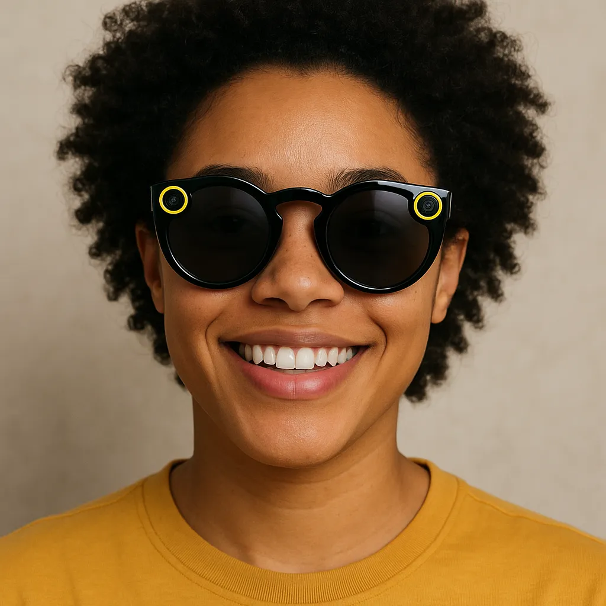

Snap Specs Roadmap: How Snap Wants to Make Augmented Reality Useful
Snap has spent years developing camera experiences, lenses and wearable prototypes. Its Specs ambition is more than putting a screen on a frame: it is an attempt to make digital objects and services feel connected to the physical world.

Roadmap dates: confirmed milestones
Snap has supplied several concrete dates. Where it has only said “fall”, this page keeps that wording rather than inventing a launch day.
Snap introduced SPECS and said the glasses were expected to ship in the US, UK and France in fall 2026.
Snap announced a Los Angeles launch event for SPECS on 16 September.
Snap said consumers could try SPECS in person at its First Look location in Los Angeles from 1 October.
Sources: Snap's 16 June 2026 announcement · Snap Newsroom product timeline · Snap's October 2026 update
From camera platform to spatial computing
Snap's experience with mobile camera effects and creator tools gives it a distinctive starting point. Specs extends that interest into wearable computing, where digital content can appear in the user's surroundings rather than only on a phone display.
What makes see-through AR different
Optical see-through glasses let the wearer continue looking directly at the real world while digital graphics are added to the view. This is different from video passthrough headsets, which show camera footage on internal screens, and different again from audio-only smart glasses.
The role of Snap OS and developers
Hardware alone rarely creates a lasting platform. Developers need tools to build spatial experiences, understand how content is positioned in the environment and design interactions that work with hands, voice and movement. Useful applications could include learning, navigation, creative tools, entertainment and collaborative work.
The hard engineering problems
A useful pair of AR glasses must balance field of view, brightness, optical clarity, weight, heat, battery life, tracking accuracy and price. These requirements compete with one another. A demonstration can be impressive while still falling short of what people would comfortably wear for hours.
What to watch next
Track developer access, real-world app quality, indoor and outdoor visibility, comfort, safety features, availability and whether the product can work independently or depends on a companion device. The quality of everyday software will be a major signal.
Our outlook — analysis, not a launch prediction
Snap's long-term opportunity is to make AR feel playful and useful at the same time. If the company can combine accessible hardware with a deep catalogue of spatial experiences, it could help make see-through AR more familiar. The pace of adoption remains uncertain and depends on cost, comfort and compelling reasons to wear the device.